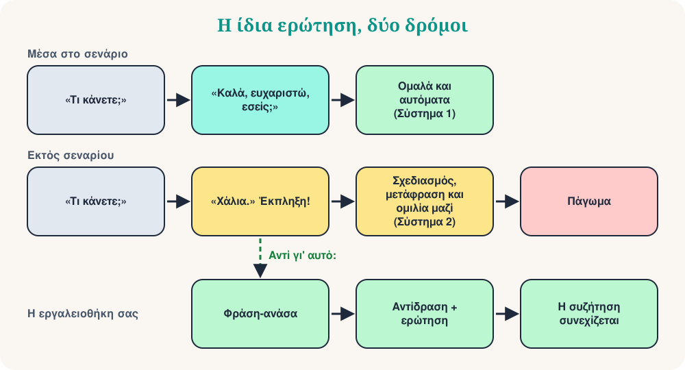

Στη λέσχη συζήτησής μου, Mind Matters, εξερευνούμε την ψυχολογία της εκμάθησης γλωσσών. Πρόσφατα ξεκινήσαμε με ένα σύντομο βίντεο που μας έκανε να γελάσουμε και μετά να σκεφτούμε. Λέγεται «Όταν ο ασθενής βγαίνει εκτός σεναρίου». Ένας υπάλληλος λέει τον συνηθισμένο χαιρετισμό: «Τι κάνετε;» Ο ασθενής απαντά ήρεμα: «Χάλια.» Και ο υπάλληλος παθαίνει βραχυκύκλωμα: κομπιάζει, μπερδεύει τις λέξεις, κοιτάζει νευρικά γύρω του.
Αν μαθαίνετε μια γλώσσα, ξέρετε αυτή τη στιγμή. Κάποιος σας κάνει μια ρουτινιάρικη ερώτηση, δίνετε τη ρουτινιάρικη απάντηση, και ξαφνικά ο άλλος λέει κάτι που δεν είχατε προετοιμάσει. Το μυαλό αδειάζει. Είναι αυτό το πάγωμα πραγματικό φαινόμενο; Η ψυχολογία έχει μια χρήσιμη εξήγηση: τη θεωρία των σεναρίων.
Μέρος 1: Τι είναι ένα σενάριο;
Τη δεκαετία του 1970, οι γνωσιακοί επιστήμονες Roger Schank και Robert Abelson πρότειναν ότι αποθηκεύουμε τη γνώση των καθημερινών καταστάσεων ως σενάρια: τυπικές αλληλουχίες γεγονότων, ρόλων και προσδοκιών. Το κλασικό τους παράδειγμα είναι το εστιατόριο:
- Μπαίνετε και περιμένετε να σας τακτοποιήσουν.
- Διαβάζετε τον κατάλογο και παραγγέλνετε.
- Τρώτε.
- Ζητάτε το λογαριασμό και πληρώνετε.
- Φεύγετε.
Κανείς δεν σας διδάσκει αυτή τη λίστα, και κανείς δεν την ξεχνά. Δεν παραγγέλνετε γλυκό πριν από το κυρίως πιάτο και δεν αναρωτιέστε ποιος πληρώνει. Τα σενάρια εξοικονομούν νοητική ενέργεια: η αλληλουχία είναι προβλέψιμη, οπότε μπορείτε να λειτουργείτε σχεδόν με αυτόματο πιλότο.
Εδώ βοηθά η δημοφιλής διάκριση του Daniel Kahneman (είναι απλοποίηση, αλλά χρήσιμη). Η συμπεριφορά με σενάριο είναι κυρίως γρήγορη και αυτόματη: το Σύστημα 1. Οι νέες καταστάσεις απαιτούν το αργό, σκόπιμο Σύστημα 2. Σε μια ξένη γλώσσα, το Σύστημα 2 δουλεύει ήδη σκληρά μόνο και μόνο για να βρει λέξεις. Γι' αυτό οι απομνημονευμένες φράσεις μοιάζουν με σταθερό έδαφος: το «Τι κάνεις;» «Καλά, ευχαριστώ, εσύ;» δεν κοστίζει σχεδόν τίποτα.
Μέρος 2: Τι συμβαίνει όταν το σενάριο σπάει;

Η συζήτηση είναι κοινή δραστηριότητα. Οι ψυχολόγοι Martin Pickering και Simon Garrod περιγράφουν τον διάλογο ως διαδραστική ευθυγράμμιση: καθώς μιλάμε, ευθυγραμμιζόμαστε ασυνείδητα μεταξύ μας, στις λέξεις που επιλέγουμε, στις δομές που χρησιμοποιούμε και στο νόημα που υποθέτουμε. Το σενάριο το διευκολύνει, γιατί και οι δύο ξέρουν τι ακολουθεί.
Όταν ο συνομιλητής σας λέει «Χάλια», η πρόβλεψη αποτυγχάνει. Τώρα πρέπει να καταλάβετε ένα απρόσμενο μήνυμα, να αποφασίσετε πώς θ' αντιδράσετε, να βρείτε τις λέξεις και να τις πείτε, όλα μαζί, σε μια γλώσσα που δεν είναι ακόμη αυτόματη. Προσθέστε την πίεση να σας παρακολουθούν και η μνήμη εργασίας υπερφορτώνεται. Το πάγωμα, το κομπιάσμα και το «βραχυκύκλωμα ρομπότ» είναι απλώς η εξωτερική όψη της υπερφόρτωσης.
Δύο πράγματα αξίζει να θυμάστε. Πρώτον, το πάγωμα δεν αποδεικνύει ότι είστε κακοί στη γλώσσα. Και οι φυσικοί ομιλητές παγώνουν όταν η συζήτηση πάει κάπου απρόσμενα· απλώς έχουν περισσότερο αυτόματο υλικό να στηριχτούν. Δεύτερον, το πρόβλημα είναι συχνά ο χρόνος. Ξέρετε πολλές από τις λέξεις. Δεν έχετε τα δευτερόλεπτα.
Μέρος 3: Εκτός σεναρίου μαθαίνουμε
Κι εγώ είχα τον ίδιο φόβο. Ως δάσκαλος και ως μαθητής αγαπούσα τους καλά προετοιμασμένους διαλόγους. Μετά από χρόνια με μαθητές αγγλικών, γαλλικών, ιταλικών, ρωσικών, ελληνικών και άλλων γλωσσών, άλλαξα γνώμη. Ένας απομνημονευμένος διάλογος είναι πρόβα. Μια απρόσμενη ανταλλαγή είναι πραγματική επικοινωνία.
Ο κοινωνιολόγος Erving Goffman έδειξε ότι η καθημερινή αλληλεπίδραση δεν είναι απλώς ακολουθία ενός κειμένου. Οι άνθρωποι διαχειρίζονται διαρκώς την κατάσταση: ερμηνεύουν τι κάνει ο άλλος, προσαρμόζονται, επιδιορθώνουν μικρές αμηχανίες και βοηθούν ο ένας τον άλλον να «σώσει την εικόνα του». Ο αυτοσχεδιασμός είναι φυσιολογική ανθρώπινη ικανότητα, όχι σημάδι αποτυχίας. Όταν παραπατάτε εκτός σεναρίου, εξασκείτε ακριβώς αυτή την ικανότητα σε μια νέα γλώσσα.
Η εργαλειοθήκη σας εκτός σεναρίου
Συμβουλή 1: Κερδίστε χρόνο με φράσεις-ανάσες
Όταν φτάσει η απρόσμενη ερώτηση, μην απαντήσετε αμέσως. Πείτε πρώτα μια σύντομη, αυτόματη φράση. Δίνει στον εγκέφαλο δύο-τρία δευτερόλεπτα και ακούγεται φυσικά, γιατί οι φυσικοί ομιλητές τις χρησιμοποιούν συνεχώς.
| Γλώσσα | Ξεκινήστε με… | Μετά προσθέστε… |
|---|---|---|
| Αγγλικά | That's a good question… | Let me think for a second… |
| Γαλλικά | C'est une bonne question… | Voyons voir… laissez-moi réfléchir. |
| Ιταλικά | Bella domanda… | Allora… vediamo… dammi un attimo. |
| Ισπανικά | Buena pregunta… | A ver… déjame pensar. |
| Ρωσικά | Хороший вопрос… | Так… дайте подумать. |
| Ελληνικά | Καλή ερώτηση… | Για να δω… να το σκεφτώ λίγο. |
Διαλέξτε μία φράση για κάθε γλώσσα και κάντε τη προεπιλογή σας. Πείτε τη φωναχτά δέκα φορές, μέχρι να μη χρειάζεται σκέψη.
Συμβουλή 2: Στοχεύστε στην επικοινωνία, όχι στην τελειότητα
Το άγχος του σεναρίου προέρχεται συχνά από τον τελειομανισμό: την κρυφή πεποίθηση ότι κάθε πρόταση πρέπει να ακούγεται σαν σχολικό βιβλίο. Όταν κάποιος βγαίνει εκτός σεναρίου, ο εσωτερικός τελειομανής πανικοβάλλεται, γιατί ο προβαρισμένος διάλογος χάλασε. Αλλάξτε στόχο. Η γλώσσα δεν είναι παράσταση, είναι σύνδεση. Χρησιμοποιήστε απλούστερες λέξεις, χειρονομίες ή περίφραση, δηλαδή εξηγήστε μια λέξη που δεν ξέρετε περιγράφοντάς την. Σκοπός είναι να καταλαβαίνετε ο ένας τον άλλον, όχι να κερδίσετε βραβείο γραμματικής.
Συμβουλή 3: Μάθετε ευέλικτα σενάρια, όχι άκαμπτα
Αν απομνημονεύσετε έναν ολόκληρο διάλογο λέξη προς λέξη, καταρρέετε όταν ο άλλος δεν τον ακολουθεί. Μάθετε αντί γι' αυτό τουβλάκια. Ένα πολύ χρήσιμο τουβλάκι είναι η σκάλα τριών βημάτων: αντιδράστε, ρωτήστε, προσφέρετε. Δουλεύει για σχεδόν κάθε έκπληξη.
| Γλώσσα | 1. Αντιδράστε | 2. Ρωτήστε | 3. Προσφέρετε |
|---|---|---|---|
| Αγγλικά | Oh no… | What happened? | Do you want to talk about it? |
| Γαλλικά | Oh non… | Qu'est-ce qui s'est passé ? | Vous voulez en parler ? |
| Ιταλικά | Oh no… | Che cosa è successo? | Vuoi parlarne? |
| Ισπανικά | Vaya… | ¿Qué ha pasado? | ¿Quieres hablar de ello? |
| Ρωσικά | Ой, нет… | Что случилось? | Хотите поговорить об этом? |
| Ελληνικά | Ωχ, όχι… | Τι συνέβη; | Θέλετε να το συζητήσουμε; |
Η ίδια ιδέα δουλεύει στις καθημερινές δουλειές. Αντί να μάθετε έναν διάλογο για να αγοράσετε καφέ, μάθετε προτάσεις με κενό που αλλάζει:
Αλλάξτε το κενό: έναν καφέ, ένα τσάι, ένα σάντουιτς.
Context: Παραγγελία
Ο άξονάς σας για κάθε έκπληξη. Η συζήτηση γίνεται κλαδί, όχι τοίχος.
Context: Όταν η απάντηση είναι «όχι»
Συμβουλή 4: Ξαναδείτε το «λάθος»
Όταν παραπατάτε, ο εγκέφαλος το διαβάζει ως απειλή. Προσπαθήστε να ξαναδείτε την έκρηξη αδρεναλίνης. Αντί για «τα έκανα θάλασσα, ακούστηκα χαζός», πείτε στον εαυτό σας την παρακάτω φράση. Ο γλωσσολόγος Stephen Krashen αποκάλεσε το άγχος «συναισθηματικό φίλτρο» που εμποδίζει τη μάθηση. Η υπόθεση συζητιέται, αλλά οι περισσότεροι δάσκαλοι αναγνωρίζουν το φαινόμενο: οι χαλαροί μαθητές μιλούν περισσότερο, και ο περισσότερος λόγος σημαίνει πρόοδο.
Πείτε το νοερά και μετά χρησιμοποιήστε τη φράση-ανάσα σας.
Context: Εσωτερική φωνή
Γρήγορο κουίζ
❓ Ο ασθενής λέει «Χάλια». Παγώνετε. Σύμφωνα με τη θεωρία των σεναρίων, γιατί;
Ένα σενάριο προβλέπει τι ακολουθεί. Όταν η πρόβλεψη αποτυγχάνει, πρέπει να περάσετε από την αυτόματη στην κοπιαστική επεξεργασία, και αυτό σας υπερφορτώνει.
❓ Ποια είναι η καλύτερη πρώτη κίνηση μετά από μια απρόσμενη ερώτηση;
Η φράση-ανάσα είναι αυτόματη, άρα δεν κοστίζει τίποτα, και δίνει στον εγκέφαλο τα δευτερόλεπτα που χρειάζεται.
❓ Ποια στρατηγική σας κάνει πιο ευέλικτους στις συζητήσεις;
Τα τουβλάκια ξανασυνδυάζονται. Ένας σταθερός διάλογος δουλεύει μόνο αν ο άλλος τον ακολουθεί.
Η εξάσκησή σας των 10 λεπτών
- Διαλέξτε τη φράση-ανάσα σας από τον πίνακα και πείτε τη φωναχτά δέκα φορές.
- Κάντε σε έναν φίλο (ή σε ένα μαγνητόφωνο) πέντε ρουτινιάρικες ερωτήσεις: «Τι κάνεις;», «Τι έκανες σήμερα;»…
- Ο φίλος απαντά σε καθεμία με απρόσμενη απάντηση: «Χάλια», «Έχασα τα κλειδιά μου», «Μετακομίζω στη Νορβηγία».
- Εσείς απαντάτε με την εργαλειοθήκη: φράση-ανάσα, αντίδραση, ερώτηση.
- Αλλάξτε ρόλους. Μετά ηχογραφήστε τον δεύτερο γύρο και ακούστε τη διαφορά.
Συμπέρασμα
Την επόμενη φορά που θα παγώσετε, μην το πείτε αποτυχία. Είναι πρόσκληση να βγείτε από το αυτόματο πρότυπο και να συναντήσετε τον πραγματικό άνθρωπο απέναντί σας. Πείτε τη φράση-ανάσα σας, αντιδράστε, ρωτήστε, και κρατήστε ζωντανή τη συζήτηση.
“Τη στιγμή που τελειώνει το σενάριο, αρχίζει η συζήτηση.”
Πηγές και περαιτέρω ανάγνωση
- Schank, R. & Abelson, R. (1977). Scripts, Plans, Goals and Understanding.
- Pickering, M. & Garrod, S. (2004). Toward a mechanistic psychology of dialogue. Behavioral and Brain Sciences, 27.
- Goffman, E. (1959). The Presentation of Self in Everyday Life.
- Kahneman, D. (2011). Thinking, Fast and Slow.
- Krashen, S. (1982). Principles and Practice in Second Language Acquisition.